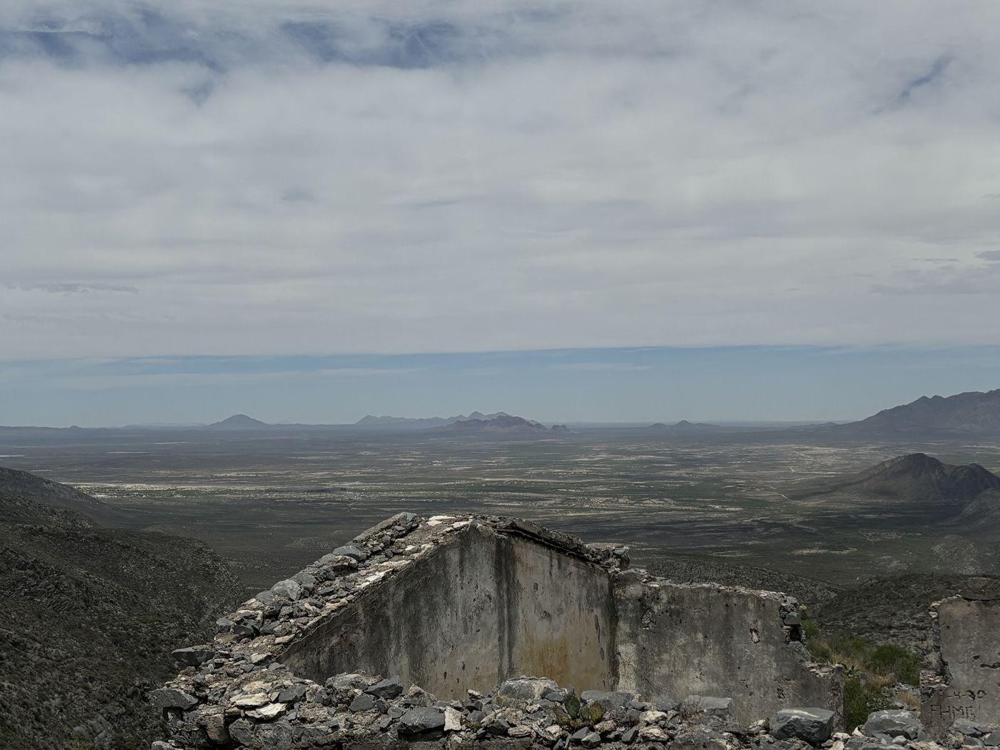

Instalación inmersiva
Existir
Un eclipse solar en nuestro espacio-tiempo local.
Se siente en el cuerpo.
Existe para siempre en la mente.

La obra
Unos minutos de noche a mitad del día
Una sala recorre las fases de un eclipse total. La luz baja, el aire se enfría, el sonido cambia y, en la totalidad, aparecen las estrellas y se enciende la corona.
Ohr acompaña con su voz. Al salir, cada persona deja una palabra en el archivo.
- Formato
- Instalación itinerante
- Medios
- Luz, sonido espacial, temperatura, vibración, voz y realidad virtual
- Públicos
- Todas las edades
- Estado
- En desarrollo · fase 1: maqueta a escala de sala
Dos escalas
Lo que siente el cuerpo, lo que hizo el tiempo
6 min 23 s
Lo que durará la totalidad del 2 de agosto de 2027 en el punto de máximo eclipse.
Minutos. La luz cambia de calidad, el aire se enfría unos grados, el horizonte se enciende en redondo y el día se equivoca.
400
Veces más ancho es el Sol que la Luna, y unas 400 veces más lejos está. Desde aquí miden lo mismo.
Tiempo profundo. La Luna se aleja unos centímetros cada año. Dentro de unos cientos de millones de años ya no cubrirá al Sol: nos tocó vivir dentro de esa ventana.
Espacio-tiempo. En el eclipse total del 29 de mayo de 1919 se midió por primera vez que el Sol desvía la luz de las estrellas, como predecía la relatividad general (Dyson, Eddington y Davidson, 1920).
Fuentes en Camino.
El recorrido
Tres momentos
Umbral
La luz empieza a cambiar. Ohr se presenta por voz.
Totalidad
Oscuridad, estrellas y corona. Vibración y sonido para quien no ve.
Regreso
Una palabra en el muro. Una postal para llevar.
Estudio para la sala
La totalidad, a un tercio de su tiempo
Acceso
La totalidad no pasa por todas partes. Existir sí puede.
Una totalidad cae en una franja angosta y dura unos minutos: la mayoría de las personas nunca ha estado dentro de una. Existir viaja a museos, festivales, escuelas y plazas, y se diseña para recorrerse con cualquier cuerpo.
- Ver
- La luz y la corona en gran formato, con alto contraste.
- Oír
- Sonido espacial y la voz de Ohr, con subtítulos.
- Tocar
- Las fases del eclipse en relieve.
- Sentir
- El aire que se enfría y la vibración de la totalidad.
Origen
Nace en Ojuela
Un eclipse total es un evento, en el sentido en que la física usa la palabra: un dónde y un cuándo exactos. Si cambias cualquiera de los dos, desaparece.
Dónde
Sierra de Mapimí, Durango, hacia los 25.8° N y 103.8° O. Ojuela es una mina abierta a finales del siglo XVI. En 1777 era la más próspera de la zona. Desde 1891, la compañía Peñoles la modernizó con electricidad y un tren de cremallera, y llegó a haber más de trescientas casas para quienes trabajaban bajo tierra. El mineral cruzaba el cañón por un puente colgante y bajaba en tren a Mapimí, donde se fundía.
Cuando la extracción terminó, el pueblo se fue a otra parte. Quedaron los muros, los arcos y el puente: un pueblo fantasma sobre un paisaje inmenso. La mina de Ojuela forma parte del Camino Real de Tierra Adentro, inscrito en la Lista del Patrimonio Mundial de la UNESCO en 2010.
Cuándo
Ojuela guarda dos relojes. Uno cuenta en siglos: la mina trabajó durante siglos y el pueblo se vació en unas décadas. El otro cuenta en minutos: el 8 de abril de 2024, poco después del mediodía, la sombra de la Luna llegó a la sierra y se quedó 4 minutos y 26 segundos.
El evento
El pronóstico era malo: había nubes sobre buena parte de esa zona de Durango. Mucha gente se quedó abajo, junto al puente. Nosotros subimos hasta una cima donde no había nadie más: unos metros más arriba, el mismo instante. Desde ahí se veían las sierras, los pueblos a lo lejos y una construcción de la que solo quedan las paredes, quizá un templo. Su techo, ahora, es el cielo.
Cuando la Luna cubrió al Sol, el horizonte se volvió un atardecer en redondo: era el borde de la sombra, en otro lugar y, para quien estaba ahí, en otro momento del eclipse. A lo lejos, una ciudad encendió sus luces: el alumbrado creyó que era de noche. Pasaron parvadas. Desde abajo subían los gritos de la gente y se mezclaban con los nuestros.
Entre las nubes, la corona. La luz que la dibujaba había salido del Sol unos ocho minutos antes. Y las estrellas que aparecieron cerca del Sol no estaban exactamente donde las vemos de noche: su luz pasa rozando una masa que curva el espacio-tiempo. Duró 4 minutos y 26 segundos.
Cargando el álbum…
Fotos: César Simón López-Monsalvo, Alberto Rubio Ponce y Gabriela Isabel Vera Garfias · Expedición LFAE, 8 de abril de 2024, Puente de Ojuela, Durango. Historia: INAH, Mina de Ojuela; El Siglo de Durango, Infraestructura de la Compañía Minera Peñoles, 1897–1904; UNESCO, Camino Real de Tierra Adentro. Física: la luz tarda unos 8 min 20 s del Sol a la Tierra (NASA); desviación de la luz, F. W. Dyson, A. S. Eddington y C. Davidson, Phil. Trans. R. Soc. A 220 (1920) 291–333.
Documental
Los que estuvieron ahí
Entrevistas con personas que vivieron un eclipse total, con la voz de Ohr como hilo. Lleva el archivo a festivales y a la pantalla.
Los talleres y la observación con telescopio están en Sentir.